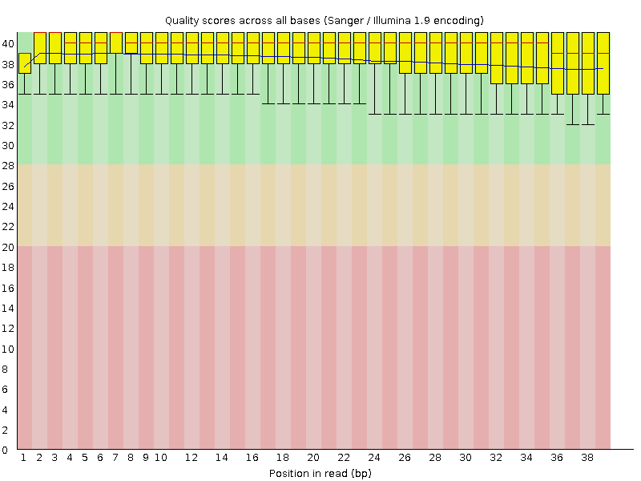
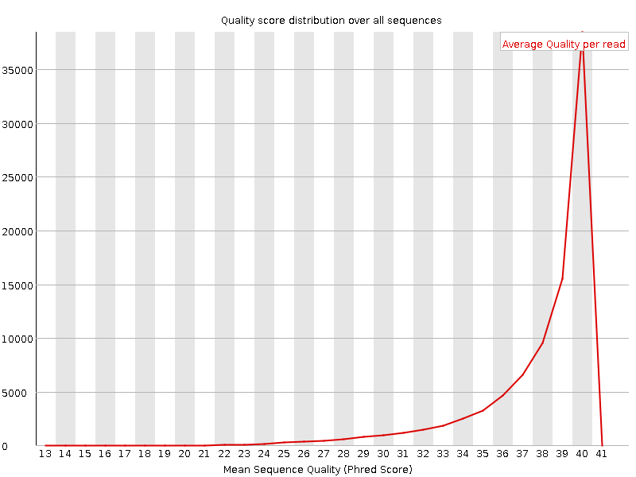
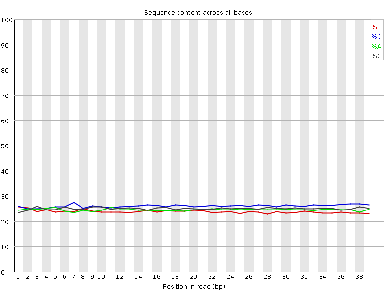
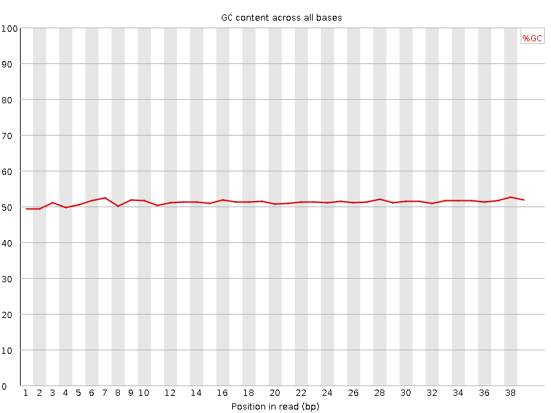
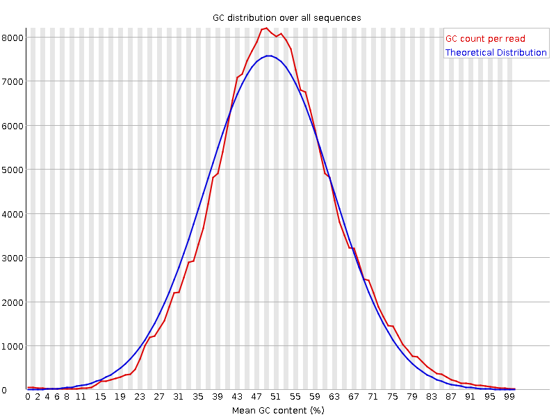
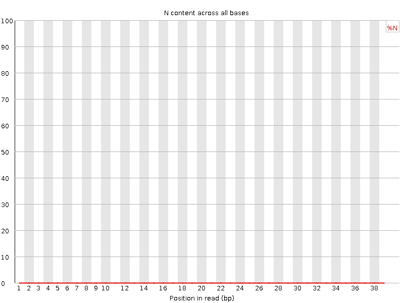
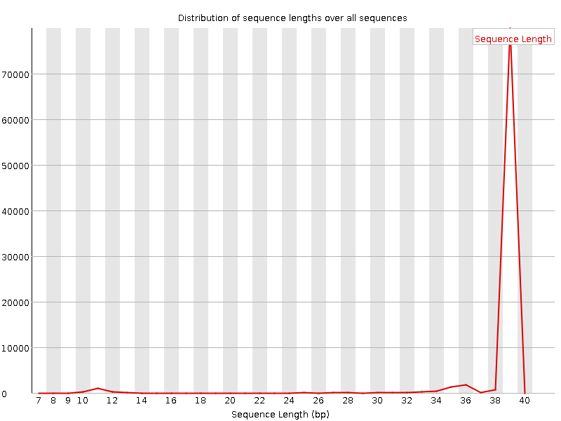
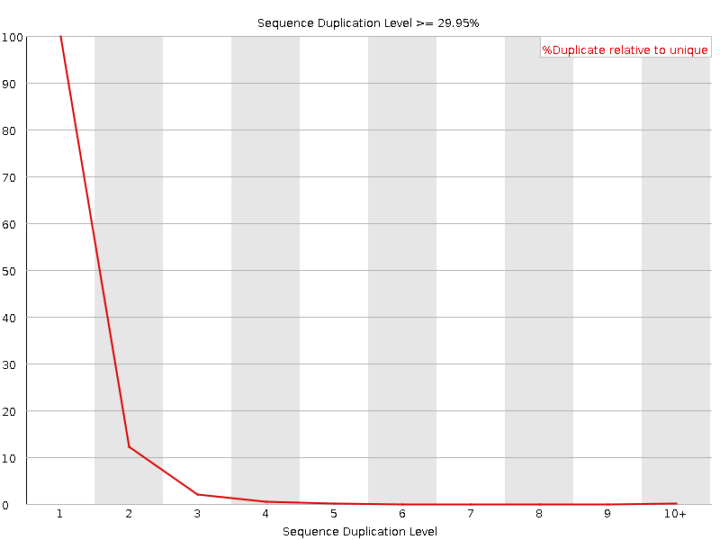
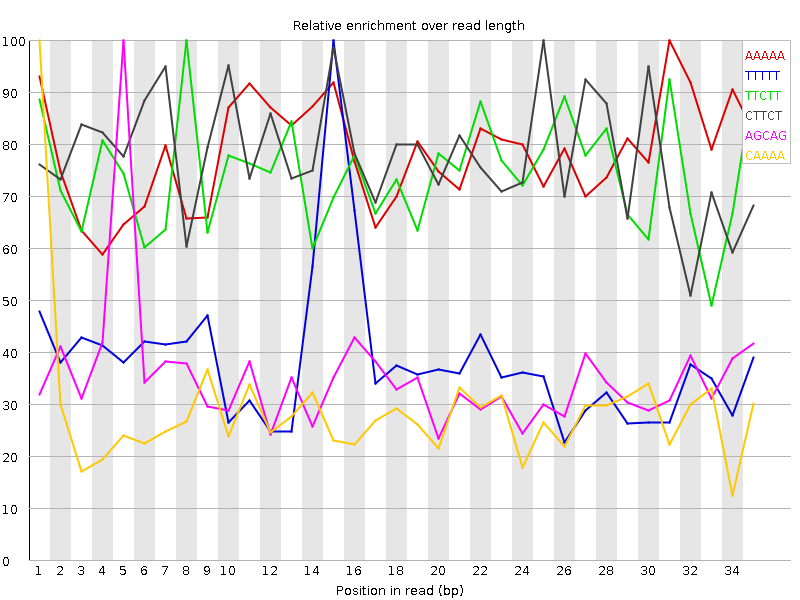

![[OK]](Icons/tick.png) Basic Statistics
Basic Statistics
| Measure | Value |
|---|---|
| Filename | Sample_1_L002_shorten.fastq |
| File type | Conventional base calls |
| Encoding | Sanger / Illumina 1.9 |
| Total Sequences | 89648 |
| Filtered Sequences | 0 |
| Sequence length | 8-39 |
| %GC | 51 |
Per base sequence quality

Per sequence quality scores

Per base sequence content

Per base GC content

Per sequence GC content

Per base N content

![[WARN]](Icons/warning.png) Sequence Length Distribution
Sequence Length Distribution

Sequence Duplication Levels

Overrepresented sequences
| Sequence | Count | Percentage | Possible Source |
|---|---|---|---|
| CTGTAGCTCTA | 289 | 0.322371943601642 | No Hit |
| AGAACTTTGTA | 260 | 0.2900232018561485 | No Hit |
| CTGTAGCTCA | 165 | 0.18405318579332502 | No Hit |
| CTGTAGCTCGA | 91 | 0.10150812064965196 | No Hit |
Kmer Content

| Sequence | Count | Obs/Exp Overall | Obs/Exp Max | Max Obs/Exp Position |
|---|---|---|---|---|
| AAAAA | 11670 | 4.2035246 | 5.368572 | 31 |
| TTTTT | 8045 | 3.3935423 | 8.788937 | 15 |
| TTCTT | 7955 | 3.0595934 | 4.105397 | 8 |
| CTTCT | 8660 | 3.0369513 | 3.887258 | 25 |
| AGCAG | 7865 | 2.5586345 | 7.213007 | 5 |
| CAAAA | 6505 | 2.2049727 | 7.6281986 | 1 |
| AGAAA | 6205 | 2.1895823 | 6.26936 | 2 |
| AAAAG | 6065 | 2.1401799 | 8.23973 | 2 |
| AACAA | 5540 | 1.8778707 | 5.3928623 | 5 |
| AGCTC | 5420 | 1.7480836 | 8.952458 | 5 |
| TTTGT | 4310 | 1.7256962 | 6.103177 | 6 |
| GCAGG | 5365 | 1.7098421 | 6.5852537 | 6 |
| AAGCA | 5120 | 1.7002105 | 6.7988043 | 4 |
| CTTTG | 4455 | 1.6264142 | 5.6846905 | 5 |
| AAAGC | 4615 | 1.5325139 | 6.405485 | 3 |
| TGTAG | 3895 | 1.4342918 | 10.405453 | 2 |
| GAACT | 4065 | 1.3931894 | 6.3210692 | 2 |
| CAAGG | 4165 | 1.3549538 | 5.309268 | 7 |
| AGAAC | 3945 | 1.3100255 | 5.5626583 | 1 |
| TTGTA | 3235 | 1.2550023 | 5.4739676 | 7 |
| AACTT | 3475 | 1.2547135 | 6.231668 | 3 |
| CTGTA | 3540 | 1.2521887 | 9.9953375 | 1 |
| ACTTT | 3305 | 1.2316239 | 5.738025 | 4 |
| TAGAA | 3335 | 1.214597 | 5.4229236 | 1 |
| GTAGC | 2920 | 0.9804134 | 8.862686 | 3 |
| TAGCT | 2430 | 0.8595533 | 8.977847 | 4 |